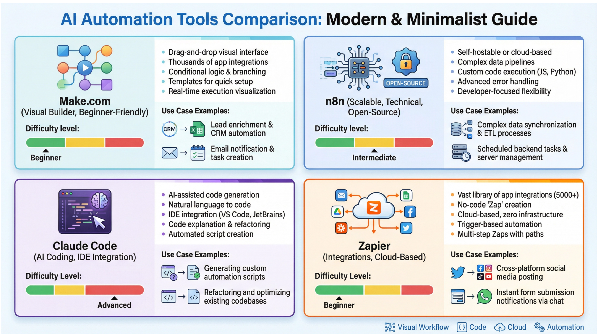

Fundamentos de Automacao com IA
Hora de colocar a mao na massa e construir sua primeira automacao funcional de ponta a ponta
Context Engineering na Pratica
Estruturando seu contexto
Um contexto bem gerenciado e a diferenca entre um assistente generico e um especialista que entende o seu mundo.

Contexto Global
Informacoes sobre sua empresa, produtos, tom de voz
Contexto de Funcao
O papel especifico da IA (agente de triagem, gerador de propostas)
Contexto de Tarefa
O objetivo imediato (analisar este email, responder esta pergunta)
Memoria (RAG)
A base de conhecimento externa que a IA consulta
Exercicio Pratico
Crie um documento CONTEXTO_GLOBAL.md com as secoes:
- * Sobre a Empresa
- * Produtos/Servicos
- * Publico-Alvo
- * Tom de Comunicacao
- * Regras Importantes
RAG Pratico
Memoria que Funciona
O segredo de um bom RAG nao esta apenas em ter a informacao, mas em como ela e estruturada e recuperada.
Principios de um RAG eficaz:
Chunking Inteligente
Quebre documentos em "chunks" logicos e autocontidos (paragrafo, secao FAQ, politica)
Metadados
Cada chunk deve ter etiquetas: tipo, produto, validade. Ajuda a filtrar e priorizar
Busca Hibrida
Recuperacao por semelhanca semantica, nao apenas palavras-chave
Regra de Fallback
Sistema deve dizer "Nao encontrei" em vez de inventar
Exercicio Pratico
Transforme um documento em chunks:
Chunk 1 (Servico A):
Nome, descricao, preco, publico
Chunk 2 (Servico B):
Nome, descricao, preco, publico
Sua Primeira Automacao Real
Make/n8n na pratica
Chegou o "momento magico". Vamos construir um fluxo de automacao que resolve um problema real.

Estrutura da Automacao (3 Blocos):
O que inicia o fluxo? (novo email, formulario preenchido)
Processamento com OpenAI/Anthropic usando seu Prompt Mestre
O que acontece depois? (Slack, CRM, email, ticket)
Exemplo de Prompt no bloco de IA:
"Voce e um agente de triagem.
Classifique o seguinte email ({{email_body}}) em uma das categorias:
- Comercial
- Suporte
- Outro
Extraia o nome do remetente e o email."
Conectando a um Resultado de Negocio
Metricas que importam
Principio do "Cachorro abanando o rabo"
O negocio (resultado desejado) deve guiar a escolha da tecnologia, e nao o contrario. Nao siga a ferramenta da moda; resolva um problema real.
Uma automacao pela automacao e apenas um hobby. Uma automacao de negocio resolve um gargalo e tem uma metrica.
1. Identifique o Gargalo
Qual problema sua automacao resolve?
Ex: "Demora de 12 horas para responder a um novo lead"
2. Defina a Metrica
Como voce medira o sucesso?
Ex: "Tempo de primeira resposta em minutos"
3. Estabeleca a Linha de Base
Meca a metrica ANTES da automacao
Ex: "Atualmente, o tempo medio e de 8 horas"
4. Defina a Meta
Qual e o objetivo?
Ex: "Atingir tempo medio de 10 minutos em 30 dias"
Entregaveis da Trilha 2
Documento de Contexto Global
Sistema RAG Estruturado
Automacao Funcional (3 blocos)
Metrica Definida e Medida
Excelente Progresso!
Voce nao apenas entendeu os conceitos, mas os transformou em um sistema funcional que gera valor. Agora voce tem um "ativo digital" que pode ser medido, melhorado e replicado.